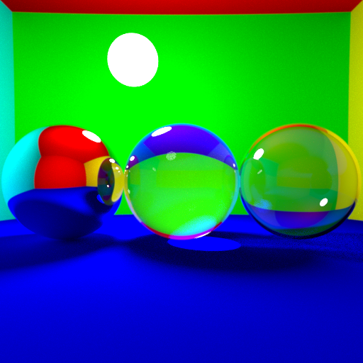
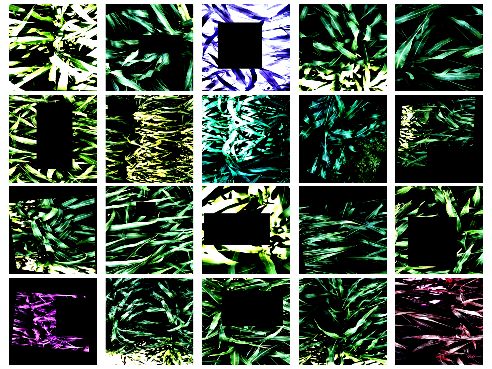
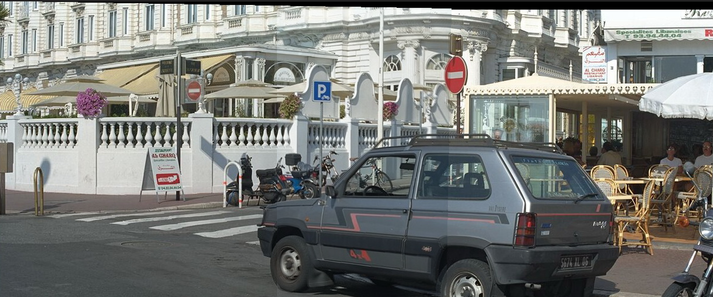

This internship was sponsored and done in collaboration between IRSN, ISL and LIX. For this internship the goal was to further knowledge of
blast characteristics and weapons effects.
Interaction between blasts and targets is of major interest to public authorities in order to provide protection to sensitive infrastructure.
IRSN and ISL have built up a significant base of experiments of hemispherical blast effect assessment using explosive charges, detonated in contact with
a planar surface supporting a semi-cylindrical obstacle. These videos can consequently be analyzed in order to assess the blast load on a convex
structure and also the potential downstream protective effects of such a structure used as a barrier. Currently, however, studies on the shock wave
are carried out by manually inspecting the high-speed imagery. At the moment, there is no tool available to automate this process, neither in the
identification nor the analysis of the shock.
At the conclusion of my internship I proposed a method that attempts to accomplish the above automatically. In order to do so I used a set of
complex techniques. That is, pre-processing techniques, Particle Filters, and Maximum Likelihood Estimation. All results obtained and methods
developped are now owned by IRSN and ISL and are of confidential nature.

I implemented Ray Tracer from scratch. Each object that we defined (spheres, polygons,...) has an intersection
function, which allows us determine whether a given ray has crossed (intersected) the object. The basic idea is that we send from a given point in our scene,
a ray object through a panel (one could think of it as a window, and the image is what we see through it). The place where the ray intersects the panel becomes the pixel coordinate. Then we follow this
ray across the scene and assign a color to it following physics and known models.
Features such as Diffuse and mirror surfaces, Indirect lighting for point light sources, Anti-aliasing,
Spherical lights, Depth of Field and Motion blur and Smoothing and texture were implemented.

Fluid simulation refers to the sub-field of Computer Graphics which is interested in simulating liquids and gases.
In the report an approach is showcased on how to simulate free-surface 2D fluids. This method relies
on the incompressible Euler’s equations.
Vornoi Diagrams were used to represent the liquid.

In this project I tackled the challenging problem of Cultivar classification.
One can see from the above that this classification problem differs from others by being extremely specialized. Such a task is
impossible to the untrained human eye. I achieved an adequate performance of 80% accuracy on the test set.

I have worked on projects on the field of 3D computer vision. For instance, using the Imagine ++ library in C++
I have implemented a program to create panoramas from two pictures, and an application to display epipolar lines.